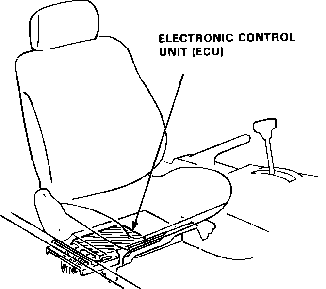

Sedan
Fig. 14 Electronic Control Unit:

1. Disconnect negative battery cable.
2. Move front passenger to rear-most position.
3. Remove ECU mounting screws.
4. Remove ECU from vehicle.
5. Reverse procedure to install. Insure all connections to ECU are tight and secure.